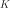

KarhunenLoeveAlgorithm¶
- class KarhunenLoeveAlgorithm(*args)¶
Base class for Karhunen Loeve algorithms.
- Parameters
- covModel
CovarianceModel The covariance model.
- sfloat,

The minimal relative amplitude of the eigenvalues to consider in the decomposition wrt the sum of the preceeding eigenvalues. The default value is 0.
- covModel
See also
Notes
The Karhunen Loeve decomposition enables to build some finite approximations of stochastic processes which are optimal with respect to the norm
 .
.We suppose that is a covariance function defined on
 , continuous at .
, continuous at .The class
KarhunenLoeveAlgorithmenables to determine the solutions of the second kind Fredholm equation associated to , ie to find the
, ie to find the  such that:
such that:(1)¶
where is a nonincreasing sequence of nonnegative values (the eigenvalues) and the associated sequence of eigenfunctions, normalized by
 . They form an hilbertian basis of
. They form an hilbertian basis of  .
.The Mercer theorem shows that the covariance function
writes:(2)¶
The threshold
 is used in order to select the most significant eigenvalues, ie all the eigenvalues such that (the infinite sum on the right being replaced by the sum of all computed eigenvalues in numerical algorithms):
is used in order to select the most significant eigenvalues, ie all the eigenvalues such that (the infinite sum on the right being replaced by the sum of all computed eigenvalues in numerical algorithms):(3)¶
The number of significant eigenvalues can also be specified directly by using
setNbModes(). In this case, only eigenvalues will be computed, and the number of selected eigenvalues will be:
eigenvalues will be computed, and the number of selected eigenvalues will be:(4)¶
with
 as defined in (3).
as defined in (3).Thus if threshold is set to 0, the number of selected eigenvalues is set by
setNbModes().To solve (1), we use the functional basis of with
 elements defined on
elements defined on  . We search the solutions of type:
. We search the solutions of type:where . We note:
and the matrix of the  first modes of the Karhunen Loeve decomposition.
The approximated Fredholm problem writes for all
 :
:which enables to define the residual function defined by
(5)¶
The Fredholm problem writes:
(6)¶
which is solved either by the Galerkin approach or the collocation approach.
The integrals in (5) can be evaluated with:
a -approach: see
KarhunenLoeveP1Algorithm,a quadrature approach: see
KarhunenLoeveQuadratureAlgorithm,a singular values decomposition approach: see
KarhunenLoeveSVDAlgorithm.
Methods
Accessor to the object's name.
Accessor to the covariance model.
getId()Accessor to the object's id.
Accessor to the underlying implementation.
getName()Accessor to the object's name.
Accessor to number of modes to compute.
Get the result structure.
Accessor to the threshold used to select the most significant eigenmodes.
run()Launch the algorithm.
setCovarianceModel(covariance)Accessor to the covariance model.
setName(name)Accessor to the object's name.
setNbModes(nbModes)Accessor to the maximum number of modes to compute.
setThreshold(threshold)Accessor to the limit ratio on eigenvalues.
- __init__(*args)¶
- getClassName()¶
Accessor to the object’s name.
- Returns
- class_namestr
The object class name (object.__class__.__name__).
- getCovarianceModel()¶
Accessor to the covariance model.
- Returns
- covModel
CovarianceModel The covariance model.
- covModel
- getId()¶
Accessor to the object’s id.
- Returns
- idint
Internal unique identifier.
- getImplementation()¶
Accessor to the underlying implementation.
- Returns
- implImplementation
The implementation class.
- getName()¶
Accessor to the object’s name.
- Returns
- namestr
The name of the object.
- getNbModes()¶
Accessor to number of modes to compute.
- Returns
- nint
The maximum number of modes to compute. The actual number of modes also depends on the threshold criterion.
- getResult()¶
Get the result structure.
- Returns
- resKL
KarhunenLoeveResult The structure containing all the results of the Fredholm problem.
- resKL
Notes
The structure contains all the results of the Fredholm problem.
- getThreshold()¶
Accessor to the threshold used to select the most significant eigenmodes.
- Returns
- sfloat, positive
The threshold
.
Notes
OpenTURNS truncates the sequence
at the index defined in (3).
- run()¶
Launch the algorithm.
Notes
It launches the algorithm and creates a
KarhunenLoeveResult, structure containing all the results.
- setCovarianceModel(covariance)¶
Accessor to the covariance model.
- Parameters
- covModel
CovarianceModel The covariance model.
- covModel
- setName(name)¶
Accessor to the object’s name.
- Parameters
- namestr
The name of the object.
- setNbModes(nbModes)¶
Accessor to the maximum number of modes to compute.
- Parameters
- nint
The maximum number of modes to compute. The actual number of modes also depends on the threshold criterion.